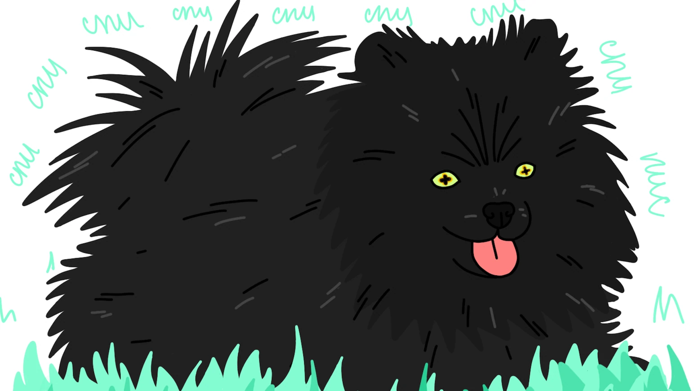
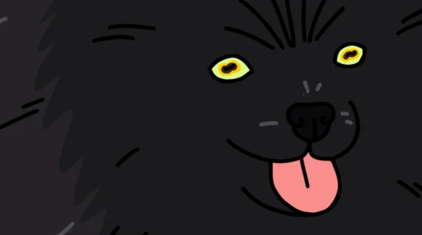

Данила Блюз уверяет, что интернет безнадежно отстал от телевидения и будущее — за собакой-гипнотизером
В интернете бытует стереотип о том, что наше отечественное телевидение давно устарело: все самое клевое, модное и передовое — оно в Сети, а телик смотрят только пенсионеры и староверы из глухих таежных сел. Что там в этом телике? Вечный КВН, «Поле чудес» и куплеты Бандурина с Вашуковым, тогда как в интернете… Нет, скажу я вам! Утверждать, что телевидение старо, может лишь тот, кто ничего не понимает в будущем.

На днях по соцсетям начал распространяться короткий видеоролик — отрывок из передачи канала «Россия 1» «Удивительные люди», где маленький черный шпиц по кличке Принцесса гипнотизировал людей. Собака, высунув язык, долго смотрела в глаза каждому из участников ТВ-шоу, и те, засыпая, падали в гору из подушек как подрубленные. Ведущие, распахнув рты, наблюдали за действом и перешептывались: «Собачка правда в глаза смотрит!»
Примечательно, что сама передача вышла еще в прошлом году, а ролик в Сети набрал популярность только сейчас. Это к слову о якобы отсталости телевидения. Как показывает практика, отстает от трендов пока только интернет.
Собака-гипнотизер — это же настоящее будущее телевидения! Вспомните визионерский мультсериал «Футурама» от одного из главных пророков современности Мэтта Грейнинга (Гроунинга, Гроенинга — как кому удобно). Сколько его предсказаний сбылось в одних только «Симпсонах», посвященных современности. А сколько всего сбудется из «Футурамы», действие которой происходит в далеком третьем тысячелетии? Это нам только предстоит узнать! Ну, одно уже точно сбывается: на ТВ пришла собака-гипнотизер. Если кто помнит, то «Футурама» предсказывала — у существа под названием гипножаба будет свой отдельный канал на телевидении. Что там происходит? Ничего, на белом фоне сидит гипножаба и смотрит вам в глаза своими выпученными гипнотическими бельмами. Это ли не будущее?
Что в своей сущности есть телевидение? Развлечение и пропаганда. К этой же простой формуле, кстати, движется и интернет — посмотрите, в какую помойку превратился, например, YouTube. Там ведь либо дегенеративные видео в духе инструкций по изготовлению слайма, либо еще более дегенеративные политические расследования от Камикадзе.
Так вот, раньше вместо гипножабы сидел какой-нибудь Кашпировский и в прайм-тайм пучил глаза на телезрителей. Сейчас там сидит Соловьев, эта тетка из программы «60 минут» или лысый из «Время покажет». Они тоже проводят сеанс коллективного гипноза, только по несколько другой методике.
Если гипножаба, шпиц по кличке Принцесса и Кашпировский вводят зрителя в транс пронзительным взглядом, то методика вышеперечисленных передач использует цыганский метод: когда человек теряет рассудок от обилия противоречивой информации, которая одновременно вливается ему в уши. Как действуют цыгане? Они окружают свою жертву и начинают тараторить ей в уши совершенно разные установки: «Позолоти ручку», «Дай, погадаю тебе, яхонтовый мой», «Ребенок голодает, от поезда отбились, неделю не кушали», «Купи героин, дорогой, очень хороший, сама вчера три штуки скушала». Человек не знает, куда ему отвечать и кого слушать, и в итоге теряет волю, отдает свой лопатник, часы и подписывает дарственную на квартиру. Точно так же действуют отечественные политические ток-шоу, там представители двух противоположных точек зрения одновременно орут друг на друга в течение часа: «Крым наш!», «Крым не ваш!», «Трамп!», «Путин!», «Зеленский!» и так далее. В итоге к концу передачи сознание зрителя превращается в пластилин. Выходит ведущий и лепит из этого пластилина все, что ему угодно. И подобные сеансы психобичевания проходят на каждом канале.

Интернет скоро подхватит все эти фишки, недаром туда в последнее время хлынуло столько народу из телика. Но не потому, что за интернетом будущее, а как раз наоборот: потому что там вся эта движуха находится в зачаточном состоянии. Они просто столбят себе еще не вспаханное поле для будущей порочной деятельности.
Но, как мы видим, телевидение вновь опережает Сеть: нашлась уже замена и Соловьеву, и Синдеевой, и лысому из «Время покажет» — черный шпиц по кличке Принцесса. Недолго осталось ждать момента, когда, собравшись всей семьей за столом, жители необъятной России приучатся включать телевизор и два часа глядеть в бездонные черные глазки маленькой собачки. А очнувшись по окончании передачи, будут чувствовать себя бодрыми и отдохнувшими, с неясным, но очень острым желанием идти на выборы.